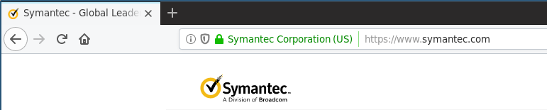

No primeiro texto falando sobre HTTPS publicado aqui há uns tempos, foi feita uma introdução ao funcionamento do protocolo HTTPS, principalmente sobre os comos e porquês teóricos de utilizá-lo sempre que possível - esse texto pode ser encontrado aqui.
Se no primeiro texto utilizamos questões hipotéticas como artifício literário para facilitar a leitura, neste o intuito é responder algumas questões reais que ficaram abertas no texto anterior e/ou foram feitas por ou para mim apõs a publicação anterior, antes de entrar em maiores detalhes/mudar de assunto.
1 - SSL? TLS? SSL/TLS? O que é o quê entre os dois protocolos?
Enquanto a definição de HTTPS (um protocolo em que uma camada de criptografia é adicionada em volta da comunicação via protocolo HTTP), SSL e TLS costumam causar mais confusão, principalmente por serem usados de forma intercambiável para definir "o protocolo utilizado para criptografar os dados numa conexão HTTPS".
De forma estrita, SSL (Secure Sockets Layer), é o protocolo inicial desenvolvido pela Netscape para atuar como esta camada de criptografia em cima do protocolo HTTP. Este SSL 'estrito' é um protocolo já obsoleto, tendo sua última versão (3.0) definida em 1996 e devendo ser utilizado apenas quando for absolutamente necessário permitir o acesso de clientes que suportem apenas este protocolo.
Em 1999, uma versão atualizada do protocolo SSL 3.0 foi proposta pela Internet Engineering Task Force. Para identificar que esta versão do protocolo e as subsequentes estariam sob desenvolvimento e tutela da IETF e não mais da Netscape, o protocolo em proposta foi renomeado para TLS (Transport Layer Security) 1.0.
Por conta desta continuidade, é comum e inócuo se referir de forma intercambiável a SSL ou TLS (ou SSL/TLS) em discussões/textos em que não é necessário especificar a versão do protocolo utilizada.
Para discussões em que a versão exata do protocolo é relevante, como definição de quais versões de protocolo suportar em um determinado servidor, ou quais protocolos estão vulneráveis a uma determinada vulnerabilidade, é imperativo explicitar o protocolo e a(s) versão(ões) em discussão.
Por simplicidade e para deixar clara a obsolescência do protocolo SSL, será utilizado o nome TLS neste texto mesmo quando se tratar de uma situação em que ambos os protocolos seriam válidos.
2 - Que subdomínios estão cobertos por um certificado 'wildcard'? Tenho um nome de domínio com N níveis de sub-(sub-sub-sub-sub-)subdomínios, consigo gerar um certificado único que funcione neste caso?
Relembrando do texto anterior, certificados wildcard são válidos para todos os subdomínios de um determinado domínio. Por exemplo, um certificado wildcard para *.victal.eti.br é válido para qualquer subdominio.victal.eti.br.
O 'asterisco' num certificado wildcard, porém, é valido apenas como prefixo de um domínio e substitui apenas um nível de subdomínios. Ou seja: - Um certificado para *.example.org NÃO é válido para o endereço sub1.sub2.example.org - é necessário um certificado válido especificamente para este domínio ou um wildcard para *.sub2.example.org - Um "domínio" *.*.example.org não é válido em um certificado - é necessário que o certificado se refira a cada subdomínio intermediário (*.sub1.example.org, *.sub2.example.org, etc.) explicitamente - Um certificado wildcard por si só NÃO é válido para a raiz do domínio, e.g. o certificado para *.example.org nâo vale para https://example.org (sem qualquer subdomínio). Nesse caso deve ser utilizado um certificado válido explicitamente para o domínio raiz e para os subdomínios, como no caso abaixo, do DuckDuckGo:
3 - Quais as diferenças entre os tipos de validação de certificados existentes? Quando vale a pena o custo de obter um certificado com validação mais completa?
Para uso em comunicação via HTTPS, Autoridades Certificadoras comumente fornecem certificados com um entre três diferentes níveis de validação. Embora todos ofereçam o mesmo tipo de segurança quanto à integridade e confidencialidade dos dados trafegados, alguns oferecem validações extras no que diz respeito à autenticidade do serviço disponibilizado, a saber:
Domain Validation (DV) - Este é o tipo de validação mais comum, que consiste apenas em validar que o solicitante do certificado mantém algum tipo de controle sobre o nome DNS do domínio para o qual o certificado será gerado, exigindo por exemplo: - a criação de uma entrada DNS do tipo TXT para o domínio - a disponibilização de um arquivo em um servidor Web acessível por esse nome
Por conta do tipo de validação realizado, um certificado DV é capaz de autenticar apenas que corresponde ao nome de domínio que está sendo acessado.
Organization Validation (OV) - Além do domínio para o qual o certificado é válido, um certificado OV é associado também a uma Organização (e.g. uma empresa ou órgão governamental), cujos dados são adicionados ao certificado e são portanto validados pela Autoridade Certificadora por meios "externos" à solicitação, por exemplo: - Dados de cadastro da Organização no órgão governamental competente - Dados de cadastro da Organização em uma base de dados de um órgão terceiro considerado confiável (e.g. Serviços de registro de empresas como a Dun & Breadstreet) - Solicitação de documentos recentes da Organização (e.g. contas ou documentos fornecidos por um banco ou órgão público) para comprovar os dados de nome e endereo da Organização
Com um certificado deste tipo, embora um browser acessando o endereço correspondente não demonstre imediatamente que o certificado, e por tabela, o site, está associado a uma determinada organização, é possível verificar esta associação acessando os detalhes do certificado no browser. Por exemplo, para o site do Banco do Brasil:
Acessando o site, não há nenhuma diferença visível imediatamente.

Consultando os detalhes do certificado podemos verificar que o mesmo está associado à organização "Banco do Brasil S.A."
Para mais detalhes sobre quais validações a serem feitas na emissão de certificados DV e OV, pode-se consultar os Baseline Requirements do CA/Browser Forum - um consórcio formado por Autoridades Certificadoras e outras partes interessadas a fim de definir e divulgar práticas aceitas para a emissão de certificados TLS.
Extended Validation (EV) - Assim como os certificados OV, estes também são associados a uma Organização, porém para emissão destes a Autoridade Certificadora deve realizar uma série de validações muito mais estrita tanto nos dados solicitados quanto na forma de verificação, incluindo: - Verificação de que a organização está registrada e operando (por um determinado período mínimo de tempo) sob o nome a ser adicionado ao certificado - Verificação da identidade de um indivíduo responsável pela organização perante a AC - Verificação de uma forma de contato out of band com a organização.
A existência de uma validação mais estrita costuma fazer com que certificados EV sejam significativamente mais caros e mais demorados de se obter. A contrapartida porém é que diferentemente dos certificados DV e OV, um certificado EV pode ser considerado como prova de que o serviço a que se tem acesso está de fato associado a uma determinada organização. y Por este motivo, é comum que em versões mais antigas de browsers sites com certificados EV tenham o nome da organização a que pertencem apresentado ao lado da URL (como abaixo, no site da Symantec acessado pelo Firefox ESR)

3.5 - OK, entendi o que significam os diferentes tipos de certificados. Mas qual eu devo usar no meu site?
Apesar da longa descrição acima, no frigir dos ovos atualmente a sugestão para qualquer novo serviço é simplesmente utilizar um certificado DV, utilizando uma AC que forneça certificados gratuitos como a Let's Encrypt se estiver disponível para seu caso de uso, e, preferencialmente, de forma que seja possível automatizar a renovação dos certificados. Como descrito anteriormente, para fins de integridade e confidencialidade dos dados trafegados, o tipo de validação do certificado utilizado é indiferente.
Quanto às garantias de autenticidade para os diferentes tipos de validação, algumas questões fazem com que, no mínimo, os pontos positivos dos certificados OV ou EV usualmente não compensem os custos:
- Os indicadores visuais de certificados EV (como o mostrado na seção anterior) estão sendo sistematicamente removidos dos principais browsers em termos de fatia de mercado (Chrome, Firefox e Safari por exemplo) após pesquisas A/B indicarem que a presença ou ausência destes não leva a diferenças no comportamento por parte dos usuários.12
- Mesmo em browsers em que o indicador visual ainda está presente, como o conteúdo do mesmo é controlado por quem solicita o certificado, é relativamente simples gerar certificados cujo nome colida com outra entidade para fins de phishing e spoofing, bastando fazê-lo em uma jurisdição diferente da organização alvo do spoof. 3
- Devido às restrições de validação, não é possível gerar certificados wildcard com validação EV. Certificados para múltiplos subdomínios precisam listar explicitamente todos os domínios desejados (o que impede seu uso para alguns casos de uso, como subdomínios definidos por usuários) e normalmente têm um custo muito mais elevado que certificados para um único domínio.
- O custo de um certificado EV é elevado, tanto em relação ao valor monetário (na escala de centenas de dólares para um certificado com validade de no máximo dois anos), quanto na burocracia para obtenção e renovação do certificado, que exige que o processo de renovação seja planejado antecipadamente e impede sua automatização completa.
Assim, recomenda-se a obtenção de certificados EV apenas para casos de uso que obriguem sua utilização - como para assinatura de arquivos executáveis (algo completamente não relacionado a HTTPS, mas que também depende de certificados TLS) ou caso algum órgão regulador exija o uso de certificados OV/EV para sites de determinadas organizações (embora deva salientar que não conheça casos concretos do gênero) - para todos os outros casos, basta um certificado DV, idealmente com um renovação automática.
4 - Aonde consigo mais informações sobre esses assuntos?
Além dos links ao longo do texto, as páginas abaixo oferecem mais conteúdo relevante e aprofundado sobre o funcionamento de certificados TLS, as diferenças entre cada tipo de certificado e outros assuntos referentes ao uso/implementação de HTTPS. Infelizmente, a maioria está em inglês: